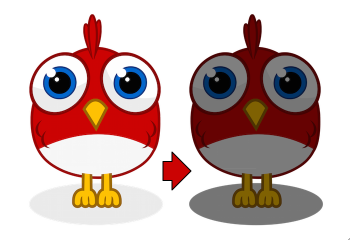
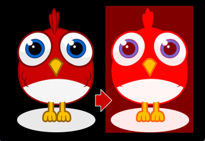
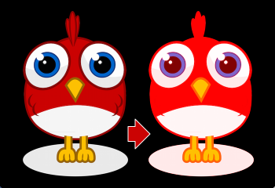

var image:Image = new Image(texture);
image.color = 0x808080; // R = G = B = 0.5Custom Filters
Are you ready to get your hands dirty? We are now entering the realm of custom rendering code, starting with a simple fragment filter.
Yes, this will involve some low level code; heck, you’ll even write a few lines of assembler! But fear not, it’s not rocket science. As my old math teacher used to say: a drilled monkey could do that!
| Remember: filters work on the pixel level of display objects. The filtered object is rendered into a texture, which is then processed by a custom fragment shader (hence the name fragment filter). |
The Goal
Even though we’re picking a simple goal, it should be a useful one, right? So let’s create a ColorOffsetFilter.
You probably know that you can tint any vertex of a mesh by assigning it a color. On rendering, the color will be multiplied with the texture color, which provides a very simple (and fast) way to modify the color of a texture.
The math behind that is extremely simple: on the GPU, each color channel (red, green, blue) is represented by a value between zero and one. Pure red, for example, would be:
R = 1, G = 0, B = 0
On rendering, this color is then multiplied with the color of each pixel of the texture (also called "texel").
The default value for an image color is pure white, which is a 1 on all channels.
Thus, the texel color appears unchanged (a multiplication with 1 is a no-op).
When you assign a different color instead, the multiplication will yield a new color, e.g.
R = 1, G = 0.8, B = 0.6 × R = 0.5, G = 0.5, B = 0.5 ------------------------- R = 0.5, G = 0.4, B = 0.3
And here’s the problem: this will only ever make an object darker, never brighter. That’s because we can only multiply with values between 0 and 1; zero meaning the result will be black, and one meaning it remains unchanged.

Figure 1. Tinting an image with a gray color.
That’s what we want to fix with this filter! We’re going to include an offset to the formula. (In classic OpenFL, you would do that with a ColorTransform.)
-
New red value = (old red value × redMultiplier) + redOffset
-
New green value = (old green value × greenMultiplier) + greenOffset
-
New blue value = (old blue value × blueMultiplier) + blueOffset
-
New alpha value = (old alpha value × alphaMultiplier) + alphaOffset
We already have the multiplier, since that’s handled in the base Mesh class; our filter just needs to add the offset.

Figure 2. Adding an offset to all channels.
So let’s finally start, shall we?!
Extending FragmentFilter
All filters extend the class starling.filters.FragmentFilter, and this one is no exception.
Now hold tight: I’m going to give you the complete ColorOffsetFilter class now; this is not a stub, but the final code.
We won’t modify it any more.
class ColorOffsetFilter extends FragmentFilter
{
public function new(
redOffset:Float=0.0, greenOffset:Float=0.0,
blueOffset:Float=0.0, alphaOffset:Float=0.0)
{
super();
colorOffsetEffect.redOffset = redOffset;
colorOffsetEffect.greenOffset = greenOffset;
colorOffsetEffect.blueOffset = blueOffset;
colorOffsetEffect.alphaOffset = alphaOffset;
}
override private function createEffect():FilterEffect
{
return new ColorOffsetEffect();
}
private var colorOffsetEffect(get, never):Float;
private function get_colorOffsetEffect():ColorOffsetEffect
{
return Std.downcast(effect, ColorOffsetEffect);
}
public var redOffset(get, set):Float;
private function get_redOffset():Float
{
return colorOffsetEffect.redOffset;
}
private function set_redOffset(value:Float):Float
{
colorOffsetEffect.redOffset = value;
setRequiresRedraw();
return value;
}
// the other offset properties need to be implemented accordingly.
public var greenOffset(get, set):Float;
public var blueOffset(get, set):Float;
public var alphaOffset(get, set):Float;
}That’s surprisingly compact, right? Well, I have to admit it: this is just half of the story, because we’re going to have to write another class, too, which does the actual color processing. Still, it’s worthwhile to analyze what we see above.
The class extends FragmentFilter, of course, and it overrides one method: createEffect.
You probably haven’t run into the starling.rendering.Effect class before, because it’s really only needed for low-level rendering.
From the API documentation:
An effect encapsulates all steps of a Stage3D draw operation. It configures the render context and sets up shader programs as well as index- and vertex-buffers, thus providing the basic mechanisms of all low-level rendering.
The FragmentFilter class makes use of this class, or actually its subclass called FilterEffect.
For this simple filter, we just have to provide a custom effect, which we’re doing by overriding createEffect().
The properties do nothing else than configuring our effect.
On rendering, the base class will automatically use the effect to render the filter.
That’s it!
If you’re wondering what the colorOffsetEffect property does: that’s just a shortcut to be able to access the effect without constantly casting it to ColorOffsetEffect.
The base class provides an effect property, too, but that will return an object of type FilterEffect — and we need the full type, ColorOffsetEffect, to access our offset properties.
|
More complicated filters might need to override the process method as well; that’s e.g. necessary to create multi-pass filters.
For our sample filter, though, that’s not necessary.
Finally, note the calls to setRequiresRedraw: they make sure the effect is re-rendered whenever the settings change.
Otherwise, Starling wouldn’t know that it has to redraw the object.
Extending FilterEffect
Time to do some actual work, right? Well, our FilterEffect subclass is the actual workhorse of this filter. Which doesn’t mean that it’s very complicated, so just bear with me.
Let’s start with a stub:
class ColorOffsetEffect extends FilterEffect
{
private var _offsets:Array<Float>;
public function new()
{
super();
_offsets = [];
_offset.resize(4);
}
override private function createProgram():Program
{
// TODO
}
override private function beforeDraw(context:Context3D):Void
{
// TODO
}
public var redOffset(get, set):Float;
private function get_redOffset():Float { return _offsets[0]; }
private function set_redOffset(value:Float):Float { return _offsets[0] = value; }
public var greenOffset(get, set):Float;
private function get_greenOffset():Float { return _offsets[1]; }
private function set_greenOffset(value:Float):Float { return _offsets[1] = value; }
public var blueOffset(get, set):Float;
private function get_blueOffset():Float { return _offsets[2]; }
private function set_blueOffset(value:Float):Float { return _offsets[2] = value; }
public var alphaOffset(get, set):Float;
private function get_alphaOffset():Float { return _offsets[3]; }
private function set_alphaOffset(value:Float):Float { return _offsets[3] = value; }
}Note that we’re storing the offsets in a Vector, because that will make it easy to upload them to the GPU.
The offset properties read from and write to that vector.
Simple enough.
It gets more interesting when we look at the two overridden methods.
createProgram
This method is supposed to create the actual Stage3D shader code.
|
I’ll show you the basics, but explaining Stage3D thoroughly is beyond the scope of this manual. To get deeper into the topic, you can always have a look at one of the following tutorials: |
All Stage3D rendering is done through vertex- and fragment-shaders. Those are little programs that are executed directly by the GPU, and they come in two flavors:
-
Vertex Shaders are executed once for each vertex. Their input is made up from the vertex attributes we typically set up via the
VertexDataclass; their output is the position of the vertex in screen coordinates. -
Fragment Shaders are executed once for each pixel (fragment). Their input is made up of the interpolated attributes of the three vertices of their triangle; the output is simply the color of the pixel.
-
Together, a fragment and a vertex shader make up a Program.
The language filters are written in is called AGAL, an assembly language. (Yes, you read right! This is as low-level as it gets.) Thankfully, however, typical AGAL programs are very short, so it’s not as bad as it sounds.
|
A quick tip: be sure to always enable Just be sure to disable the property again for release builds, as it has a negative impact on performance. |
Good news: we only need to write a fragment shader. The vertex shader is the same for most fragment filters, so Starling provides a standard implementation for that. Let’s look at the code:
override private function createProgram():Program
{
var vertexShader:String = STD_VERTEX_SHADER;
var fragmentShader:String =
"tex ft0, v0, fs0 <2d, linear> \n" +
"add oc, ft0, fc0";
return Program.fromSource(vertexShader, fragmentShader);
}As promised, the vertex shader is taken from a constant; the fragment shader is just two lines of code. Both are combined into one Program instance, which is the return value of the method.
The fragment shader requires some further elaboration, of course.
AGAL in a Nutshell
In AGAL, each line contains a simple method call.
[opcode] [destination], [argument 1], ([argument 2])
-
The first three letters are the name of the operation (
tex,add). -
The next argument defines where the result of the operation is saved.
-
The other arguments are the actual arguments of the method.
-
All data is stored in predefined registers; think of them as Vector3D instances (with properties for x, y, z and w).
There are several types of registers, e.g. for constants, temporary data or for the output of a shader. In our shader, some of them already contain data; they were set up by other methods of the filter (we’ll come to that later).
-
v0contains the current texture coordinates (varying register 0) -
fs0points to the input texture (fragment sampler 0) -
fc0contains the color offset this is all about (fragment constant 0)
The result of a fragment shader must always be a color; that color is to be stored in the oc register.
Code Review
Let’s get back to the actual code of our fragment shader. The first line reads the color from the texture:
tex ft0, v0, fs0 <2d, linear>
We’re reading the texture fs0 with the texture coordinates read from register v0, and some options (2d, linear).
The reason that the texture coordinates are in v0 is just because the standard vertex shader (STD_VERTEX_SHADER) stores them there; just trust me on this one.
The result is stored in the temporary register ft0 (remember: in AGAL, the result is always stored in the first argument of an operation).
|
Now wait a minute. We never created any texture, right? What is this? As I wrote above, a fragment filter works at the pixel level; its input is the original object, rendered into a texture.
Our base class (FilterEffect) sets that up for us; when the program runs, you can be sure that the texture sampler |
You know what, actually I’d like to change this line a little. You probably noticed the options at the end, indicating how the texture data should be interpreted. Well, it turns out that these options depend on the texture type we’re accessing. To be sure the code works for every texture, let’s use a helper method to write that AGAL operation.
tex("ft0", "v0", 0, this.texture)That does just the same (the method returns an AGAL string), but we don’t need to care about the options any longer. Always use this method when accessing a texture; it will let you sleep much better at night.
The second line is doing what we actually came here for: it adds the color offsets to the texel color.
The offset is stored in fc0, which we’ll look at shortly; that’s added to the ft0 register (the texel color we just read) and stored in the output register (oc).
add oc, ft0, fc0
That’s it with AGAL for now. Let’s have a look at the other overridden method.
beforeDraw
The beforeDraw method is executed directly before the shaders are executed. We can use them to set up all the data required by our shader.
override private function beforeDraw(context:Context3D):Void
{
context.setProgramConstantsFromVector(Context3DProgramType.FRAGMENT, 0, _offsets);
super.beforeDraw(context);
}This is where we pass the offset values to the fragment shader.
The second parameter, 0, defines the register that data is going to end up in.
If you look back at the actual shader code, you’ll see that we read the offset from fc0, and that’s exactly what we’re filling up here: fragment constant 0.
The super call sets up all the rest, e.g. it assigns the texture (fs0) and the texture coordinates.
Before you ask: yes, there is also an afterDraw() method, usually used to clean up one’s resources.
But for constants, this is not necessary, so we can ignore it in this filter.
|
Trying it out
Our filter is ready, actually (download the complete code here)! Time to give it a test ride.
var image:Image = new Image(texture);
var filter:ColorOffsetFilter = new ColorOffsetFilter();
filter.redOffset = 0.5;
image.filter = filter;
addChild(image);
Figure 3. Our filter seems to have an ugly side effect.
Blimey! Yes, the red value is definitely higher, but why is it now extending beyond the area of the bird!? We didn’t change the alpha value, after all!
Don’t panic. You just created your first filter, and it didn’t blow up on you, right? That must be worth something. It’s to be expected that there’s some fine-tuning to do.
It turns out that we forgot to consider "premultiplied alpha" (PMA). All conventional textures are stored with their RGB channels premultiplied with the alpha value. So, a red with 50% alpha, like this:
R = 1, G = 0, B = 0, A = 0.5
would actually be stored like this:
R = 0.5, G = 0, B = 0, A = 0.5
And we didn’t take that into account. What he have to do is multiply the offset values with the alpha value of the current pixel before adding it to the output. Here’s one way to do that:
tex("ft0", "v0", 0, texture) // get color from texture
mov ft1, fc0 // copy complete offset to ft1
mul ft1.xyz, fc0.xyz, ft0.www // multiply offset.rgb with alpha (pma!)
add oc, ft0, ft1 // add offset, copy to outputAs you can see, we can access the xyzw properties of the registers to access individual color channels (they correspond with our rgba channels).
What if the texture is not stored with PMA?
The tex method makes sure that we always receive the value with PMA, so no need to worry about that.
|
Second Try
When you give the filter another try now (complete code: ColorOffsetFilter.as), you’ll see correct alpha values:

Figure 4. That’s more like it!
Congratulations!
You just created your first filter, and it works flawlessly.
(Yes, you could have just used Starling’s ColorMatrixFilter instead — but hey, this one is a tiny little bit faster, so it was well worth the effort.)
If you’re feeling brave, you could now try to achieve the same with a mesh style instead. It’s not that different, promised!